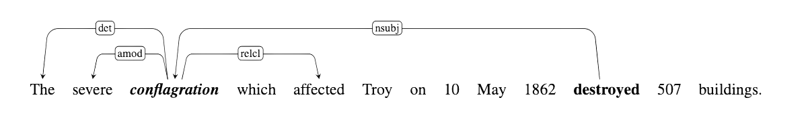

research
Using dependency parsing for few-shot learning in distributional semantics
Stefania Preda and Guy Emerson, ACL-SRW 2022

Using dependency parsing for few-shot learning in distributional semantics
Stefania Preda and Guy Emerson, ACL-SRW 2022
